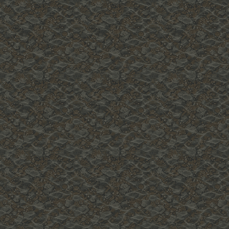
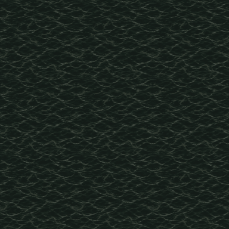
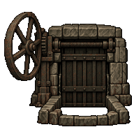
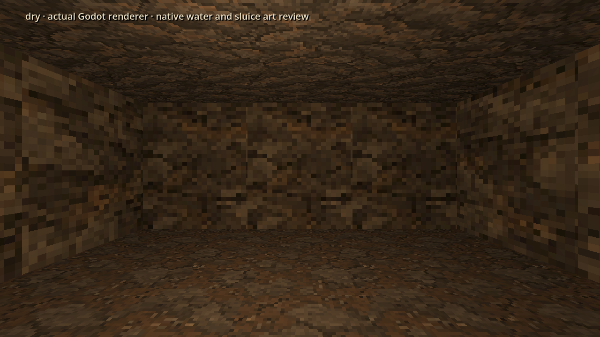
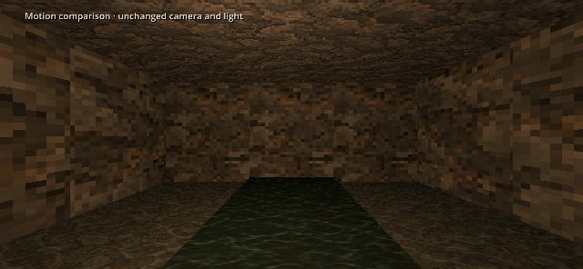

Drowned Galleries · water and sluice
Shallow water reveals submerged stone; deep water hides the bottom. The iron sluice has matched lowered/raised gate states. This is the production-ready asset library and an isolated first-person review; Claude's live-floor hookup is next.
Water surfaces · native128, 32 colours each
Shallow

3×3 repeat · exposed source edges matched during export.
Deep

3×3 repeat · no visible bottom or baked torch reflection.
Sluice · native192, shared 48-colour palette

Closed · gate lowered
Actual first-person renderer

Existing cave walls are retained for scale. New wet walls and additional dressing remain separate #166 work. Near views inspect the wheel one cell closer.
Gentle water motion

Actual renderer frames, 4 per second. The production shader uses two samples of one texture, with no screen/depth read or transparency pass. Still mode freezes its time input; the scene test confirms unchanged pixels.
Mounting, hookup and validation · Exact built-in ImageGen prompts